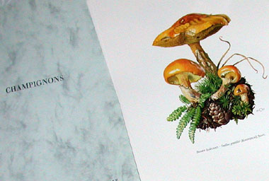

Rommelschat
zondag 21 september 2003 | Natuur
Zaterdag 7 september ben ik met Julie en twee vrienden afgezakt naar de beroemde ‘grootste rommelmarkt van Frankrijk’ in de straten van het fraaie Lille (Rijsel). Zij is verslaafd aan brocante en oude meubeltjes en had iemand nodig om haar mogelijke nieuwe aanwinsten te dragen. Ik had echter nooit gedacht tussen die karrenvrachten afdankertjes ooit zelf een schat te vinden. Maar toen was het toch prijs…
Op een van de standjes verkocht een bibliothecaris prachtige natuurprenten van bloemen en paddestoelen. Elke soort was gedrukt – in 6 tot 8 kleuren – op een stevig A4 blad, met aan de achterkant een zeer uitvoerige beschrijving in het Frans. Ze maakten deel uit van de ‘Collection de Documents D’Histoire Naturelle’, een uitgave uit de jaren ‘60, die vandaag zo goed als onvindbaar geworden is. Er bestaan twee koffers met prenten van bloemen (312 prenten), één van insecten (192), vogels (208), paddestoelen (180), zoogdieren (192) en mineralen (162).
De man bezat zelf – op de zoogdieren na – alle koffers, maar wou die voor geen geld van de wereld verkopen. De koffer van de paddestoelen had hij echter dubbel. Vandaag heb ik hem thuis opgezocht in Wattrelos (Frankrijk) om er een prijsje voor te maken (want aan de straatprijs van 2 euro per prent zou de complete koffer nogal duur uitgevallen zijn).
Ik beloofde hem een kleine internet-speurtocht te organiseren om hem aan zijn ontbrekende koffers te helpen (en mijzelf ook natuurlijk). Ik wou dat jullie konden zien wat voor een juweeltjes er tussen steken. De koffer insecten bijvoorbeeld is bijzonder impressionant! Maar mijn paddenstoeltjes ook hoor ;-)
